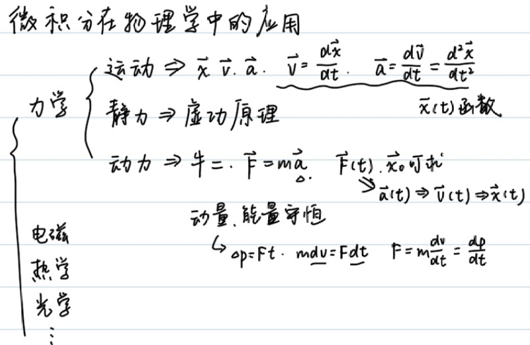
例1
\[\begin{gathered} mgh+\frac{1}{2}mv^2=C\\ v=\frac{dh}{dt}\\ mgh+\frac{1}{2}m(\frac{dh}{dt})^2=C\\ \frac{dh}{dt}=\sqrt{\frac{2(C-mgh)}{m}}\\ dt=\sqrt{\frac{m}{2(C-mgh)}}dh=\frac{\sqrt{2}}{2}(\frac{c}{m}-gh)^\frac{-1}{2}dh\\ \int_0^t dt=\frac{\sqrt{2}}{2}\int_{h_0}^{h_t}(\frac{c}{m}-gh)^\frac{-1}{2}dh\\ t=-\frac{\sqrt{2}}{g}(\frac{C}{m}-gh_t)^\frac{1}{2}+C' \end{gathered}\]
例2
在简谐运动中：
\[\begin{gathered} \vec{F}=-k\vec{x},\vec{v}=\frac{d\vec{x}}{dt},\vec{a}=\frac{d\vec{v}}{dt}=\frac{d^2\vec{x}}{dt^2}=\frac{-k}{m}x \end{gathered}\]
构建的微分方程:
\[\frac{d^2\vec{x}}{dt^2}=\frac{-k}{m}x\]
备选的\(x(t)\):
- \(A\cos (\omega t+\phi)\)
- \(A\sin (\omega t+\phi)\)
- \(e^{\omega t+\phi}\)
但\(\frac{-k}{m}\lt 0\),可以排除\(e^{\omega t+\phi}\)
设\(x(t)=A\sin (\omega t+\phi)\),则:
\[\begin{gathered} v(t)=Aw\cos(\omega t+\phi)\\ a(t)=-Aw^2\sin(\omega t+\phi)=\frac{-k}{m}A\sin(\omega t+\phi) \end{gathered}\]
解得:\(\omega=\sqrt{\frac{k}{m}},\phi=\arcsin\frac{x_0}{A}\)
结合机械能守恒,可以推出弹簧弹性势能的表达式:
在弹簧振子位于平衡位置时，设\(E_{p_0}=0\)，弹性势能最小，速度最大.
\[\begin{gathered} \frac{1}{2}mv^2+E_p=C\\ \omega=\sqrt{\frac{k}{m}}\\ v(t)=Aw\cos(\omega t+\phi)\\ C=\frac{1}{2}m(Aw)^2 \end{gathered}\]
解得:\(E_p=\frac{1}{2}m(Aw\sin(\omega t+\phi))^2=\frac{1}{2}kx^2\)
>[!NOTE] >熟知简谐运动可以与匀速圆周运动一一对应 > >圆上的一个点可以确定运动的位移与速度的大小及方向
对于简谐运动，如果做出\(v-x\)图，那么图像将会是椭圆：
\[\begin{cases} x=A\sin(\omega t+\phi)\\ y=A\omega\cos(\omega t+\phi)\\ \frac{x^2}{A^2}+\frac{y^2}{A^2\omega^2}=1 \end{cases}\]
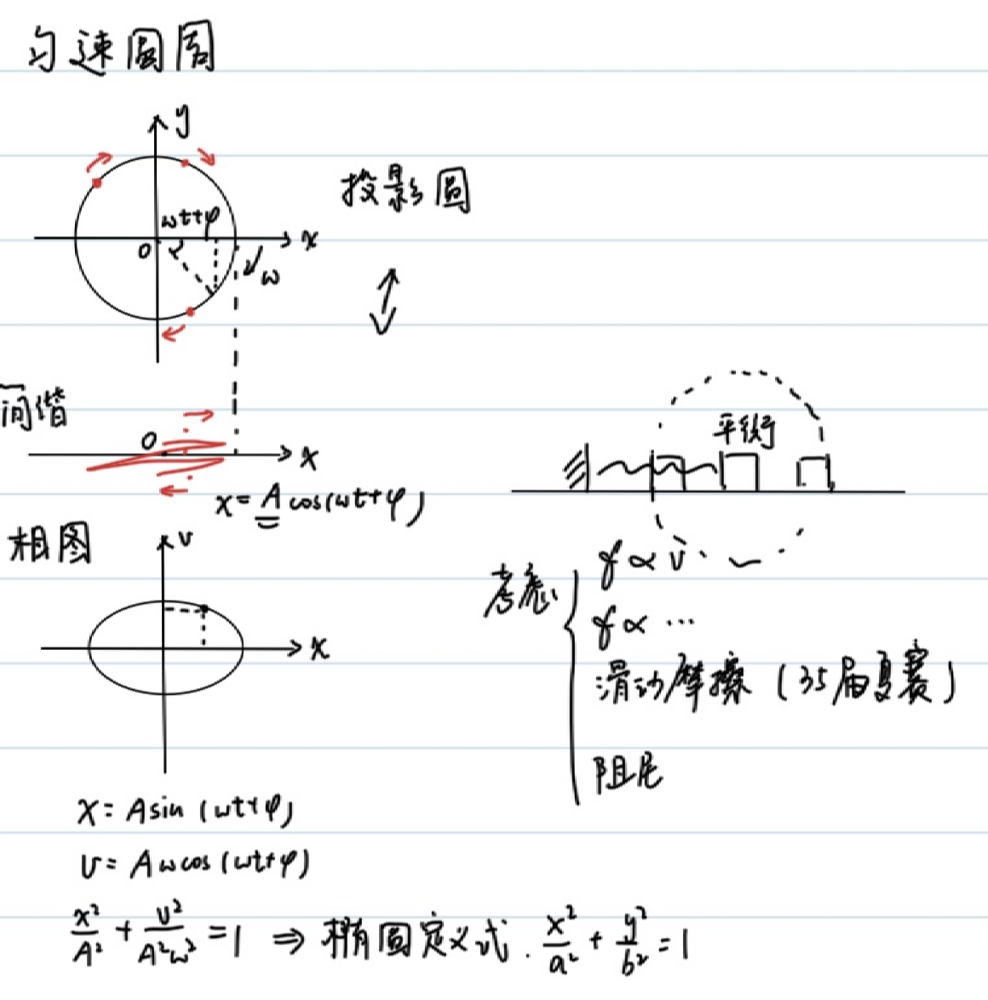
例3
(35届复赛第二题-简化版)
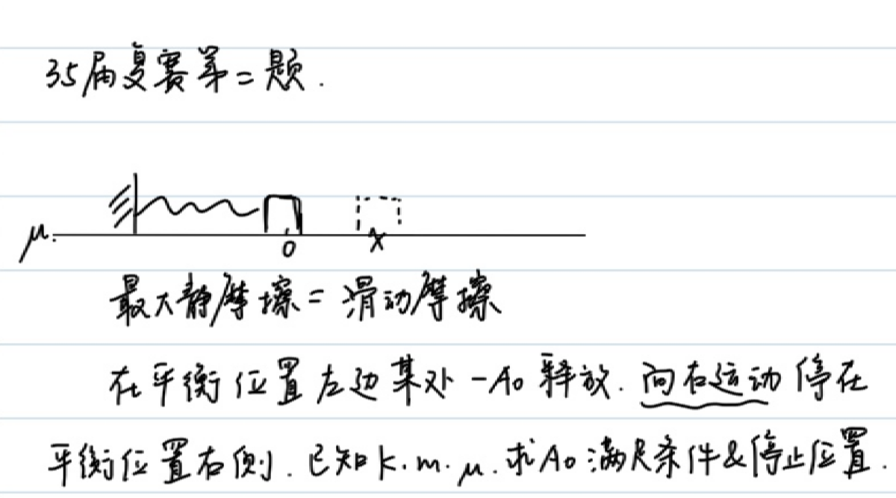
首先，为了在一开始能运动，必须满足:
\[\begin{gathered} kA_0\gt \mu mg\\ A_0\gt \frac{\mu mg}{k} \end{gathered}\]
再列出运动过程的能量守恒:
\[\begin{cases} \frac{1}{2}kA_0^2=\frac{1}{2}kx^2+(A_0+x)\mu mg,\\ kx\lt \mu mg \rightarrow x\in (0,\frac{\mu mg}{k}) \end{cases}\]
解得:
\[\begin{gathered} A_0^2=x^2+\frac{2}{k}(A_0+x)\mu mg\in (\frac{2\mu mg}{k}A_0,\frac{2\mu mg}{k}A_0+\frac{3\mu^2 m^2g^2}{k^2}) \end{gathered}\]
即:
\[\begin{gathered} (A_0-\frac{\mu mg}{k})^2\in (\frac{\mu^2 m^2g^2}{k^2},\frac{4\mu^2 m^2g^2}{k^2}) \end{gathered}\]
(Aha)最后得到:
\(A_0\in (\frac{2\mu mg}{k},\frac{3\mu mg}{k})\)
另解:(合成弹力和摩擦力，利用简谐运动的对称性)
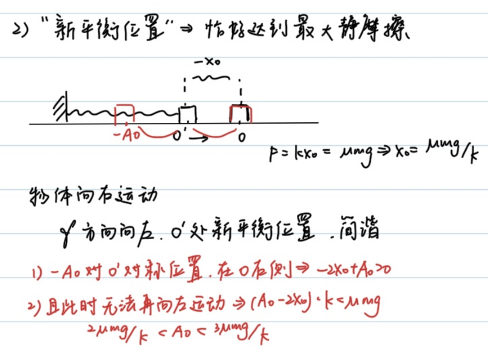
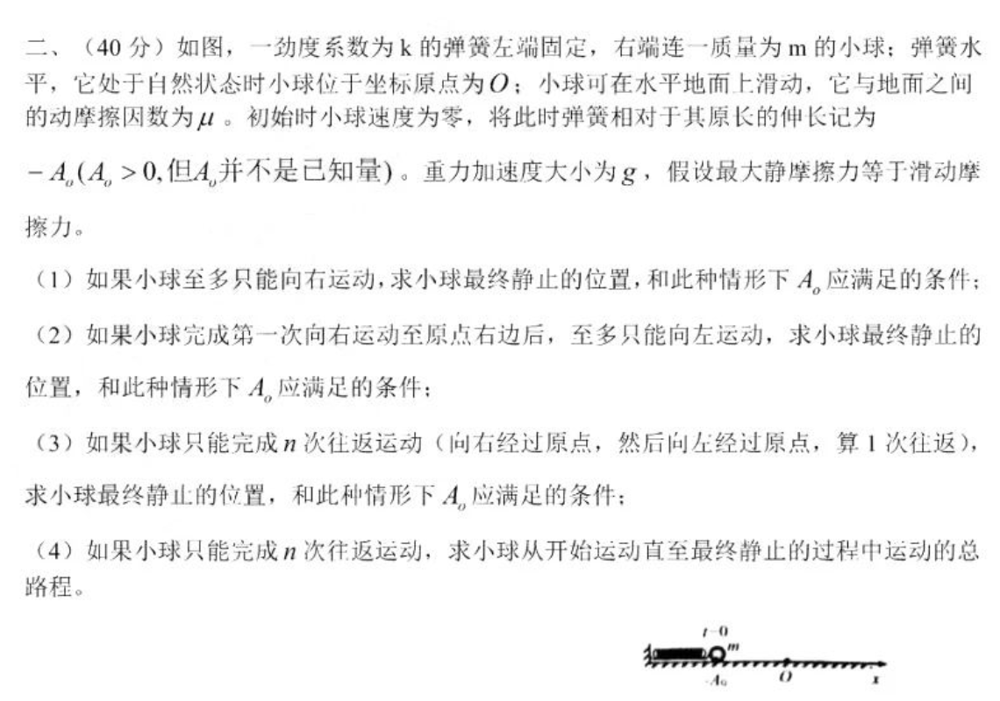
曲率半径
一个曲线运动可以看成若干圆周运动的加和，各物理量满足:
\[\begin{cases} \vec{F}=m\frac{\vec{v}^2}{\rho},\\ \vec{a_n}=\frac{\vec{v}^2}{\rho}\hat{n},\\ a_n = \frac{|\vec{a} \times \vec{v}|}{|\vec{v}|}, \quad a_t = \frac{\vec{a} \cdot \vec{v}}{|\vec{v}|} \end{cases}\]
例4
求抛物线\(y=x^2\)在\(x=0\)处的曲率半径
\[\begin{gathered} \vec{r}=(x,x^2)\\ \vec{v}=(\frac{dx}{dt},2x\frac{dx}{dt})\\ \vec{a}=(\frac{d^2x}{dt^2},2(\frac{dx}{dt})^2+2x\frac{d^2x}{dt^2}) \end{gathered}\]
不妨设\(\frac{dx}{dt}=1\),即质点在水平方向作匀速运动，在\(x=0\)处，向心加速度沿y轴方向，切向加速度为0:
\(a_n=|\vec{a}|=2,\vec{v}=(1,0),|v|=1,\rho=\frac{v^2}{a_n}=\frac{1}{2}\)
例5
已知椭圆\(\frac{x^2}{a^2}+\frac{y^2}{b^2}=1(a>b>0)\),求端点处的曲率半径.
如果设水平速度恒定，会导致在长轴处出现问题;设竖直速度恒定，短轴处也会出问题
我们采取极坐标换元:
\[\begin{gathered} \vec{x}=(a\cos(\omega t+\phi),b\sin(\omega t+\phi))\\ \vec{v}=(-a\omega\sin(\omega t+\phi),b\omega\cos(\omega t+\phi))\\ \vec{a}=(-a\omega^2\cos(\omega t+\phi),-b\omega^2\sin(\omega t+\phi)) \end{gathered}\]
在\((0,b)\)处，\(\omega t+\phi=\frac{\pi}{2}\).
\[\begin{gathered} \vec{v}=(-a\omega,0)\\ \vec{a_n}=\vec{a}=(0,-b\omega^2)\\ \rho=\frac{|v|^2}{|a_n|}=\frac{a^2}{b} \end{gathered}\]
在\((a,0)\)处，\(\omega t+\phi=0\).
\[\begin{gathered} \vec{v}=(0,b\omega)\\ \vec{a_n}=\vec{a}=(-a\omega^2,0)\\ \rho=\frac{|v|^2}{|a_n|}=\frac{b^2}{a} \end{gathered}\]
例6
一根支在固定圆上的长木棍，一端A在地面上做速度为\(v\)的匀速运动，求交点P与接触点E速度.
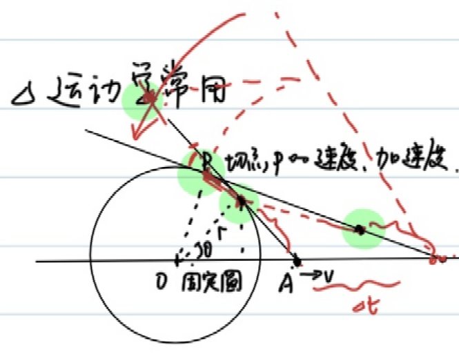
\[\begin{gathered} A(x,0)\\ \frac{dx}{dt}=v\\ P(\frac{r^2}{x},r\sqrt{1-\frac{r^2}{x^2}})\\ \vec{v_p}=(v\frac{-r^2}{x^2},v\frac{r^3}{x^3}\frac{1}{\sqrt{1-\frac{r^2}{x^2}}}) \end{gathered}\]
类似的，我们求接触点E速度。注意接触点的约束条件不是在圆上，而是到A点距离不变。
\[\begin{gathered} \vec{AP}=(\frac{r^2}{x}-x,r\sqrt{1-\frac{r^2}{x^2}})\\ |AP|=\sqrt{x^2-r^2}\\ \vec{l}=\frac{\vec{AP}}{|AP|}=(-\frac{\sqrt{x^2-r^2}}{x},\frac{r}{x})\\ E=A+|AP|\\ E'(t)=A'+|AP|\vec{l}'\\ =(v,0)+\sqrt{x^2-r^2}(-v\frac{2r^2}{x^3}\frac{1}{2\sqrt{1^2-\frac{r^2}{x^2}^2}},-v\frac{r}{x^2})\\ =(v(1-\frac{r^2}{x^2}),-v\frac{r}{x^2}\sqrt{x^2-r^2}) \end{gathered}\]
例7(虚功原理)
有一个圆上，其半圆部分放有均匀细绳，质量为\(m\),求顶点处的张力。
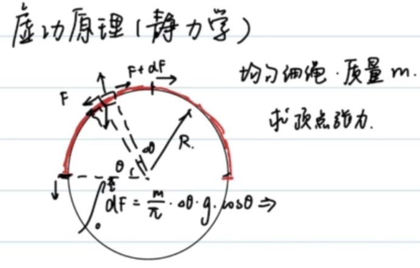
对无数微小质元受力分析，考虑沿切线方向受力平衡:
\[\begin{gathered} dF=\frac{d\theta}{\pi}mg\cos \theta\\ \int_{0}^{F}=\frac{mg}{\pi}\int_{0}^\frac{\pi}{2}\cos\theta d\theta\\ =\frac{mg}{\pi} \end{gathered}\]
当然，我们有一个技巧性强的做法：虚功原理.
缓慢把绳拉动\(\Delta x\),\(F\Delta x=\frac{\Delta x}{\pi R}mgR\),则\(F=\frac{mg}{\pi}\)
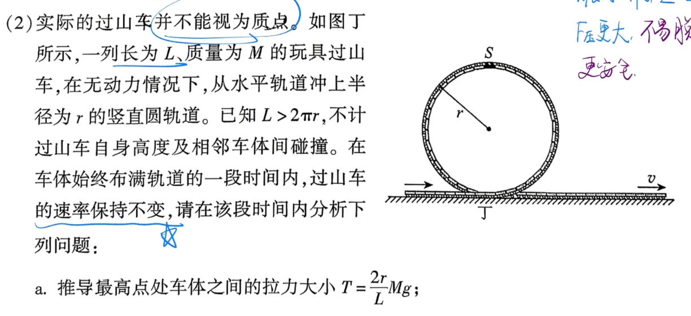
使用虚功原理，可以较容易地解决2026朝阳高三二模T19(2)
例8(必错题)
地面上一根匀质细绳，长\(l\),线密度\(\lambda\),竖直向上的恒力\(F_0\)拉绳一端，当绳恰好离开地面时的速度\(v_t\)
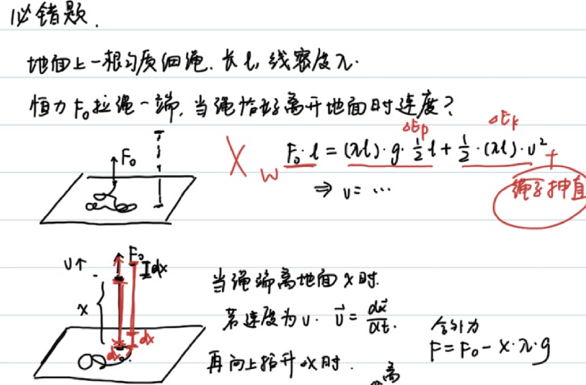
\[\begin{gathered} \frac{1}{2}l\lambda gl+\frac{1}{2}l\lambda v_t^2=F_0l\\ v_t=\sqrt{2F_0/\lambda-gl} \end{gathered}\]
很不幸，这是一个标准错误。一根无张力绳拉直需要额外做功,此方法求出的\(v_t\)偏大。
当绳端离地面\(x\)时，若速度为\(v\),\(\vec{v}=\frac{d\vec{x}}{dt}\),再向上提升\(\Delta x\)时:
动量定理:\(Fdt=(x\lambda)dv+(dx \lambda)(v+dv)\)
约去二阶小量：
\(F=\lambda xdv+\lambda vdx=\lambda\frac{d(vx)}{dt}\)
\(Fdt=\lambda d(vx)\)
但是时间是不知道的，如果利用\(dx=vdt\)，就可以解决此问题:
\(Fx dx=\lambda vx(xdv+vdx)=\lambda (vx)d(vx)\)
注意这里的\(F\)均为合外力，\(F=F_0-x\lambda g\)
\(\int_0^l(F_0-x\lambda g)x dx=\int_{0}^{lv_t}\lambda (vx)d(vx)\)
\(\frac{1}{2}F_0l^2-\frac{1}{3}\lambda gl^3=\lambda\frac{1}{2}(v_tl)^2\)
\(\frac{1}{2}F_0-\frac{1}{3}\lambda gl=\lambda\frac{1}{2}(v_t)^2\)
解得\(v_t=\sqrt{F_0/\lambda-\frac{2}{3}gl}\)
例9("微元法"运动学)
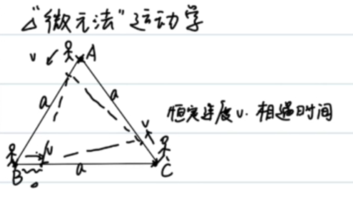
考虑对称性，显然三人组成的图形始终是正三角形:沿连线方向分解速度，可得到:
\(da=-\frac{3}{2}vdt\)
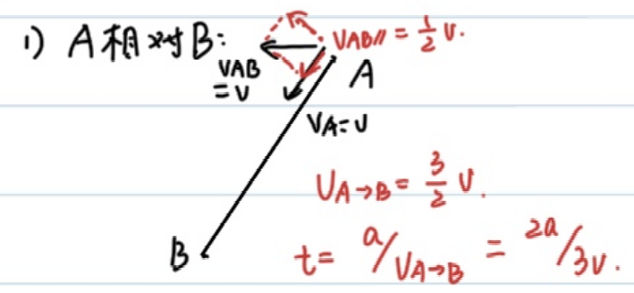
\(a=\frac{3}{2}vt\)
解得\(t=\frac{2a}{3v}\)
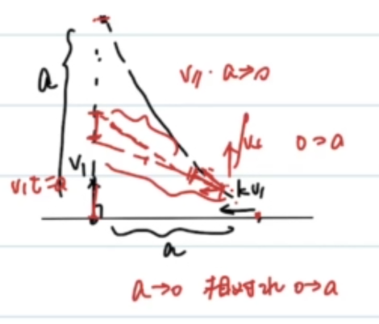
设\(kv\)与竖直方向的夹角为\(\theta\)
\[\begin{gathered} vt_0=a\\ \int_{0}^{t_0}kv\cos\theta dt=a\\ \int_{0}^{t_0}kv\sin\theta dt=a\\ dl=(-kvdt+vdt\cos\theta)\\ \int_{a}^{0}dl=\int_0^{t_0}(-kvdt+vdt\cos\theta)\\ -a=-kvt_0+\frac{a}{k}=-ka+\frac{a}{k}\\ k^2-k-1=0\\ k=\frac{1+\sqrt{5}}{2} \end{gathered}\]
转动惯量
杆，板……等刚体(质点间距离不变)-质点系运动，都可以分解为质心平动+绕质心转动
日地系统可以看作绕质心的"双星转动"，而又可以认为二者的质心绕着银河系中心平动(对于多个质点，才有转动的说法).
日/地运动可以看作日地系统绕银河中心平动+日地绕质心的转动.
由此，力对于质心，会产生平动；力的力矩，会导致转动。
质点系牛顿第二定律
\[\boxed{(\sum m)a_c=\sum{F}}\]
科尼希(质心运动)定理
\[\boxed{\sum{\frac{1}{2}m_iv_i^2}=\frac{1}{2}Mv^2+\sum{\frac{1}{2}m_iv_{ic}^2}}\]
通过\(a_c\)，不难求得\(v_c\);我们现在希望能通过合外力的力矩，求得所有质点绕质心旋转的角速度\(\omega\).
力矩\(M=Fr\),角加速度\(\beta=\frac{d\omega}{dt}\).
定义:\(M=I\beta\),其中\(I\)为转动惯量.
\[\boxed{I=\sum{m_ir_i^2}}\]
计算式如上，其中\(r_i\)为质点i到质心的距离.
例10
计算均匀杆绕中心的转动惯量
\[\begin{gathered} I=2\int_{0}^\frac{l}{2}\frac{dx}{l}mx^2\\ =\frac{1}{12}ml^2 \end{gathered}\]
例11
计算均匀杆绕一端的转动惯量 \[\begin{gathered} I=\int_{0}^l\frac{dx}{l}mx^2=\frac{1}{3}ml^2 \end{gathered}\]
转动惯量平行轴定理
刚体对任意转轴的转动惯量，等于其对平行质心轴的转动惯量与刚体总质量和两轴垂直距离平方的乘积之和。
\[\boxed{I=I_c+Md^2}\]
对于例11,\(I=I_c+m(\frac{1}{2}l)^2=\frac{1}{12}ml^2+\frac{1}{4}ml^2=\frac{1}{3}ml^2\)
例12
求均匀圆板绕过中心且垂直圆板的轴的转动惯量
\[\begin{gathered} I=\int_{0}^{R}\frac{2\pi rdr}{\pi R^2}mr^2\\ =\frac{2m}{R^2}\int_{0}^{R}r^3\\ =\frac{1}{2}mR^2 \end{gathered}\]
类比
| 力 | 力矩 | | --- | --- | | \(m\) | \(I=\sum{m_ir_i^2}\) | | \(v\) | \(\omega\) | | \(a\) | \(\beta\) | | \(F=ma\) | \(M=I\beta\) | | \(E=\frac{1}{2}mv^2\) | \(E=\frac{1}{2}I\omega^2\) |
展望(Prospect)
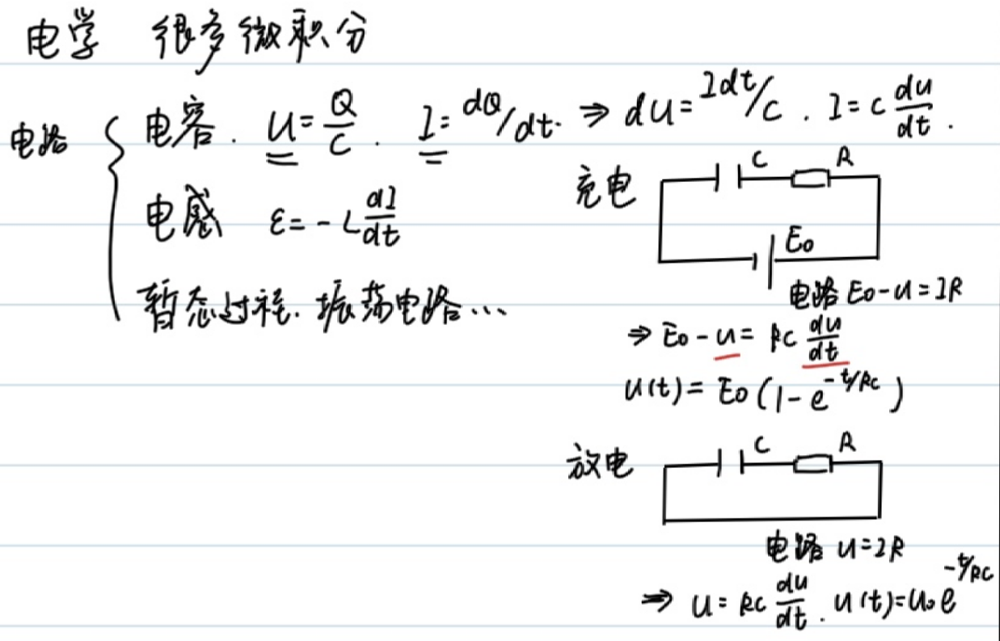
总结
本文以一系列例题为线索，展示了微积分如何成为解决物理问题的统一语言。
- 微分方程与机械能守恒（例1、例2）：从能量守恒出发列出 \(\frac{dh}{dt}\) 或 \(\frac{d^2\vec{x}}{dt^2}\) 的微分方程，再通过分离变量或试探解求解。简谐运动中我们由 \(x(t)=A\sin(\omega t+\phi)\) 反推出 \(\omega=\sqrt{k/m}\)，并结合机械能守恒导出弹性势能 \(E_p=\frac{1}{2}kx^2\)，同时建立了简谐运动与匀速圆周运动、\(v\)-\(x\) 椭圆图之间的对应关系。
- 简谐运动的对称性（例3）：在含摩擦的振动问题中，用能量守恒配合“合成弹力与摩擦力、利用对称性”的技巧，得到初始振幅的取值范围 \(A_0\in(\frac{2\mu mg}{k},\frac{3\mu mg}{k})\)。
- 曲率半径（例4–例6）：把曲线运动视为瞬时圆周运动，借助 \(\rho=\frac{v^2}{a_n}\) 与 \(a_n=\frac{|\vec{a}\times\vec{v}|}{|\vec{v}|}\) 求抛物线、椭圆端点的曲率半径；并通过恰当的参数化（如极坐标换元）避开速度分量发散的陷阱。
- 虚功原理与变质量问题（例7、例8）：虚功原理能极快地求出半圆绳顶点张力 \(F=\frac{mg}{\pi}\)；而对“离地绳”一类变质量问题，必须用动量定理 \(F\,dx=\lambda\,(vx)\,d(vx)\) 处理“拉直无张力绳的额外做功”，否则会落入能量守恒给出的标准错误，正确结果为 \(v_t=\sqrt{F_0/\lambda-\frac{2}{3}gl}\)。
- 微元法运动学（例9）：利用对称性与沿连线方向的速度分解处理追及问题，化复杂轨迹为简单的微元关系。
- 转动惯量（例10–例12）：将刚体运动分解为“质心平动 + 绕质心转动”，由质点系牛顿第二定律、科尼希定理引出转动惯量 \(I=\sum m_i r_i^2\)，计算了杆、圆板的转动惯量，并用平行轴定理 \(I=I_c+Md^2\) 加以验证，最后给出平动量与转动量的类比表。
贯穿全文的核心思想是：先选取合适的物理守恒量或动力学方程，再通过微分建模、积分求解或微元分析将其转化为可计算的数学问题。微积分不仅是计算工具，更提供了理解力学结构的视角。